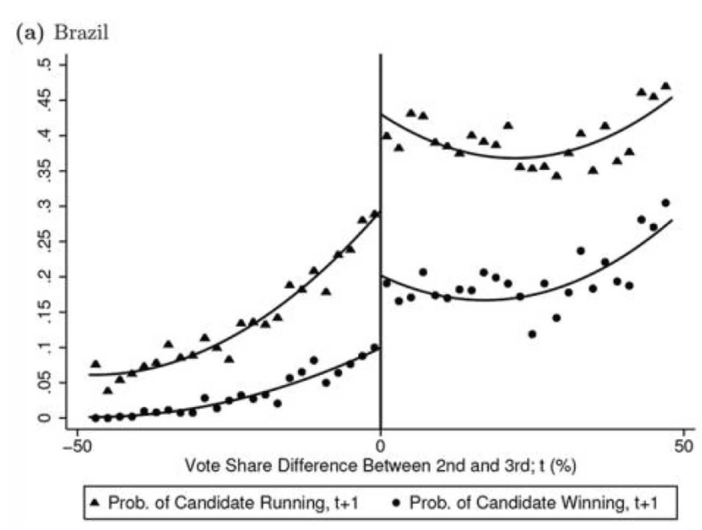
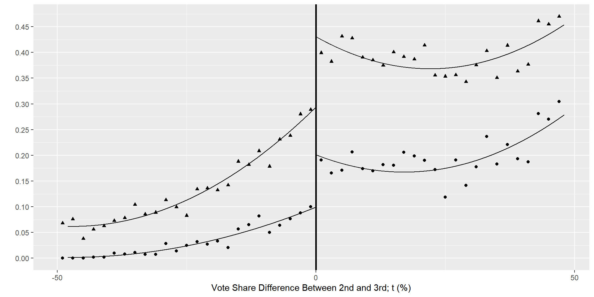
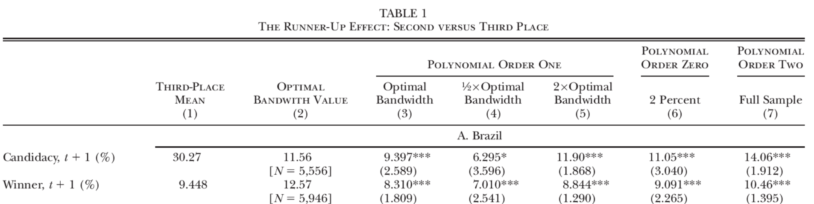

Clase 23. Regresión discontinua en R
Inferencia Causal
Irvin Rojas
rojasirvin.com
Centro de Investigación y Docencia Económicas División de Economía
Implementación de regresión discontinua
El efecto seguidor
En esta aplicación estudiaremos el efecto seguidor o runner-up effect
Anagol, S., y Fujiwara, T. (2016). The runner-up effect. Journal of Political Economy, 124(4), 927-991).
En este estudio, se estima el efecto de ser etiquetado como el seguidor
Los segundos y tercer lugares pueden acabar muy cerca el uno del otro en una elección pero el segundo lugar recibe la etiqueta de seguidor, lo que genera un salto en la probabilidad de volver a contender y ganar
Usamos regresión discontinua cuando el estado de tratamiento depende del valor que tome una variable de selección con respecto a un corte
El corte puede ser una regla explícita o una discontinuidad generada por un experimento natural
El efecto seguidor
En esta aplicación la variable de selección es la distancia entre el segundo y tercer lugar en las elecciones municipales en Brasil
Esta variable es positiva para los segundos lugares y negativa para los terceros lugares
Esto define un umbral \(x_0=0\)
Los candidatos muy cercanos al umbral tuvieron un desempeño parecido
Si existen discontinuidades, deberían ser aparentes en una gráfica
El efecto seguidor
Fuente: Anagol & Fujiwara (2016)
Datos de elecciones en Brasil
- Aquí uso la librería gtsummary
| Characteristic | N = 25,2541 |
|---|---|
| Diferencia de votos | 0.00 (28.23) |
| cand_ran_again | 5,525 / 20,608 (27%) |
| (Missing) | 4,646 |
| cand_winner | 2,400 / 20,608 (12%) |
| (Missing) | 4,646 |
| 1 Mean (SD); n / N (%) | |
Gráficos de discontinuidades

Gráficos de discontinuidades
- Corremos regresiones con un polinomio cuadrado de la edad para cada lado de la discontinuidad
- Luego calculamos los valores ajustados
Gráficos de discontinuidades

Gráficos de discontinuidades
Gráficos de discontinuidades
- Un gráfico similar se logra para la probabilidad de ganar
w1 <- lm(bin_cand_winner ~ run+I(run^2), data=subset(data.brasil,run>-48 & run<0))
w2 <- lm(bin_cand_winner ~ run+I(run^2), data=subset(data.brasil,run>=0 & run<48))
data.brasil <- data.brasil %>%
mutate(cand_win_hat_left=ifelse(run>-48 & run<0,predict(w1,.),NA)) %>%
mutate(cand_win_hat_right=ifelse(run>=0 & run<48,predict(w2,.),NA))
g3 <- data.brasil %>%
ggplot(aes(x=bin_run,y=bin_cand_winner))+
geom_point()+
geom_vline(xintercept=0, linetype="dashed", color = "red", size=1)+
geom_line(aes(x=run, y=cand_win_hat_left))+
geom_line(aes(x=run, y=cand_win_hat_right))
Gráficos de discontinuidades
- Personalizamos para generar un gráfico parecido al del artículo
g4 <- data.brasil %>%
filter(bin_cand_ran_again<.55 , bin_cand_winner <.55) %>%
ggplot()+
geom_point(aes(x=bin_run,y=bin_cand_ran_again),shape=17,fill="black")+
geom_point(aes(x=bin_run,y=bin_cand_winner))+
geom_line(aes(x=run, y=cand_win_hat_left))+
geom_line(aes(x=run, y=cand_win_hat_right))+
geom_line(aes(x=run, y=cand_ran_again_hat_left))+
geom_line(aes(x=run, y=cand_ran_again_hat_right))+
geom_vline(xintercept=0, color = "black", size=1)+
xlab("Vote Share Difference Between 2nd and 3rd; t (%)")+
ylab("")+
scale_x_continuous(breaks = c(-50,0,50))+
scale_y_continuous(breaks=seq(0, 0.5, 0.05))
Análisis paramétrico
- La forma de estimar el efecto del tratamiento paramétricamente es:
\[y_{ict}=\beta \mathcal{I}(x_{ict}>0)+f(x_{ict})+\varepsilon_{ict}\]
- Arrelgamos los datos
- El corte en este caso es el 0
Análisis paramétrico
Aquí uso la librería lfe
La sintaxis de la fórmula es
- En nuestro caso
Call:
felm(formula = cand_winner ~ D + run | 0 | 0 | id_munic, data = data.brasil)
Residuals:
Min 1Q Median 3Q Max
-24.570 -18.516 -6.227 -1.137 99.909
Coefficients:
Estimate Cluster s.e. t value Pr(>|t|)
(Intercept) 7.92092 0.48313 16.395 < 2e-16 ***
D 7.45009 0.93695 7.951 1.94e-15 ***
run 0.18546 0.01596 11.619 < 2e-16 ***
---
Signif. codes: 0 '***' 0.001 '**' 0.01 '*' 0.05 '.' 0.1 ' ' 1
Residual standard error: 30.9 on 20605 degrees of freedom
(4646 observations deleted due to missingness)
Multiple R-squared(full model): 0.07226 Adjusted R-squared: 0.07217
Multiple R-squared(proj model): 0.07226 Adjusted R-squared: 0.07217
F-statistic(full model, *iid*):802.4 on 2 and 20605 DF, p-value: < 2.2e-16
F-statistic(proj model): 792.7 on 2 and 4470 DF, p-value: < 2.2e-16 Análisis paramétrico
- Podemos especificar el cuadrado de run
- O alguna otra función de run
Call:
felm(formula = cand_winner ~ D + run + I(run^2) | 0 | 0 | id_munic, data = data.brasil)
Residuals:
Min 1Q Median 3Q Max
-24.731 -18.468 -6.159 -1.190 99.814
Coefficients:
Estimate Cluster s.e. t value Pr(>|t|)
(Intercept) 7.845e+00 4.415e-01 17.769 < 2e-16 ***
D 7.450e+00 9.370e-01 7.951 1.94e-15 ***
run 1.855e-01 1.596e-02 11.619 < 2e-16 ***
I(run^2) 9.613e-05 3.043e-04 0.316 0.752
---
Signif. codes: 0 '***' 0.001 '**' 0.01 '*' 0.05 '.' 0.1 ' ' 1
Residual standard error: 30.9 on 20604 degrees of freedom
(4646 observations deleted due to missingness)
Multiple R-squared(full model): 0.07226 Adjusted R-squared: 0.07213
Multiple R-squared(proj model): 0.07226 Adjusted R-squared: 0.07213
F-statistic(full model, *iid*): 535 on 3 and 20604 DF, p-value: < 2.2e-16
F-statistic(proj model): 747.2 on 3 and 4470 DF, p-value: < 2.2e-16 Análisis paramétrico
- Para un resumen de los resultados puedo usar stargazer
[1] ""
[2] "Comparación de especificaciones de RD"
[3] "====================================================="
[4] " Dependent variable: "
[5] " ---------------------------------"
[6] " cand_winner "
[7] " (1) (2) (3) (4) "
[8] "-----------------------------------------------------"
[9] "D 7.45*** 7.45*** 7.45*** 10.46***"
[10] " (0.94) (0.94) (0.94) (1.40) "
[11] " "
[12] "run 0.19*** 0.19*** 0.21*** 0.41*** "
[13] " (0.02) (0.02) (0.01) (0.06) "
[14] " "
[15] "I(run2) 0.0001 0.004***"
[16] " (0.0003) (0.001) "
[17] " "
[18] "D:run -0.04 -0.85***"
[19] " (0.03) (0.12) "
[20] " "
[21] "D:I(run2) 0.01*** "
[22] " (0.003) "
[23] " "
[24] "Constant 7.92*** 7.84*** 8.42*** 9.93*** "
[25] " (0.48) (0.44) (0.48) (0.74) "
[26] " "
[27] "-----------------------------------------------------"
[28] "Observations 20,608 20,608 20,608 20,608 "
[29] "R2 0.07 0.07 0.07 0.08 "
[30] "Adjusted R2 0.07 0.07 0.07 0.07 "
[31] "Residual Std. Error 30.90 30.90 30.90 30.86 "
[32] "====================================================="
[33] "Note: *p<0.1; **p<0.05; ***p<0.01"Resultados
Fuente: Anagol & Fujiwara (2016)
Vemos las consecuencias de elegir un ancho de ventana más pequeño
El resultado con un ancho de ventana con la muestra completa es de un efecto de 10.46 (error estándar de 1.40)
Con un ancho de ventana de alrededor de 6 puntos porcentuales entre el primer y segundo lugar el error es de 2.54
rdrobust
Hay toda una literatura para analizar el trade-off entre sesgo y varianza en la elección del ancho de ventana
Calonic, Cattaneo & Titiunik, (2015) proponen distintas formas de implementar algoritmos para estimar la discontinudad de la regresión con procedimientos totalmente dependiente de los datos (data driven), rdrobust
Una de las funciones más útiles de rdrobust es crear el gráfico de la discontinuidad, usando un polinomio de orden 4 por defecto
rdrobust
rdrobust
Otra función es rdselect, que permite la estimación del ancho de banda óptimo
Hay un trade-off entre sesgo y varianza en la selee
Entre más grande sea la ventana, tenemos más observaciones y nuestros estimadores serán más precisos
Pero al mismo tiempo, entre más grande sea la ventana, más grande será el sesgo en la estimación de la pendiente de la línea de regresión al incluir observaciones cada vez más disimiles
Esta teoría esta formalizada en Imbens y Kalyanaraman (2012)
rdrobust
- En la antiguedad, es decir, cuando revisé y repliqué por primera vez este artículo, la función rdbwselect en Stata permitía recuperar el ancho de banda óptimo aquí reportado (12.57)
Fuente: Anagol & Fujiwara (2016)
rdrobust
Usando rdbwselect se pueden calcular distintos anchos de ventana
Después de las varias actualizaciones al paquete, ya no he podido obtener exactamente el mismo resultado
Call: rdbwselect
Number of Obs. 20608
BW type All
Kernel Uniform
VCE method NN
Number of Obs. 10304 10304
Order est. (p) 1 1
Order bias (q) 2 2
Unique Obs. 10292 10292
=======================================================
BW est. (h) BW bias (b)
Left of c Right of c Left of c Right of c
=======================================================
mserd 11.398 11.398 19.626 19.626
msetwo 17.883 10.568 31.155 18.697
msesum 13.231 13.231 22.733 22.733
msecomb1 11.398 11.398 19.626 19.626
msecomb2 13.231 11.398 22.733 19.626
cerrd 7.232 7.232 19.626 19.626
certwo 11.347 6.705 31.155 18.697
cersum 8.395 8.395 22.733 22.733
cercomb1 7.232 7.232 19.626 19.626
cercomb2 8.395 7.232 22.733 19.626
=======================================================rdrobust
- Noten que si especificamos el ancho de ventana de 12.57, obtenemos el resultado preferido por los autores en el artículo
rd5 <- felm(cand_winner ~ D + run |0 | 0 | id_munic, data=subset(data.brasil,bw<12.57))
rd6 <- felm(cand_winner ~ D + run |0 | 0 | id_munic, data=subset(data.brasil,bw<12.57/2))
rd7 <- felm(cand_winner ~ D + run |0 | 0 | id_munic, data=subset(data.brasil,bw<12.57*2))
tab2 <- stargazer(rd5, rd6, rd7,
title="Comparación de especificaciones de RD (2)", type="text",
df=FALSE, digits=2) [1] ""
[2] "Comparación de especificaciones de RD (2)"
[3] "================================================="
[4] " Dependent variable: "
[5] " -----------------------------"
[6] " cand_winner "
[7] " (1) (2) (3) "
[8] "-------------------------------------------------"
[9] "D 8.31*** 7.01*** 8.84*** "
[10] " (1.81) (2.54) (1.29) "
[11] " "
[12] "run 0.18 0.36 0.14*** "
[13] " (0.13) (0.35) (0.04) "
[14] " "
[15] "Constant 8.86*** 9.89*** 7.67*** "
[16] " (0.94) (1.34) (0.67) "
[17] " "
[18] "-------------------------------------------------"
[19] "Observations 5,946 3,136 10,482 "
[20] "R2 0.02 0.02 0.04 "
[21] "Adjusted R2 0.02 0.02 0.04 "
[22] "Residual Std. Error 33.24 33.76 32.01 "
[23] "================================================="
[24] "Note: *p<0.1; **p<0.05; ***p<0.01"Más materiales
- Consideren echarle un ojo al tutorial que Matias Catteneo dio en el Chamberlain Seminar
- El tutorial está en Stata, pero las ideas son fácilmente trasladadas a cualquier software
Próxima sesión
Empezaremos a estudiar control sintético
Usaremos un par de clásicos para introducir el concepto (de hecho replicarán el primero en la tarea 3) y dar la formulación básica del modelo
Abadie, A., Diamond, A., & Hainmueller, J. (2010). Synthetic control methods for comparative case studies: Estimating the effect of California’s tobacco control program. Journal of the American statistical Association, 105(490), 493-505.
Abadie, A., Diamond, A., & Hainmueller, J. (2015). Comparative politics and the synthetic control method. American Journal of Political Science, 59(2), 495-510.
El resumen de lo que deben saber está en
- Abadie, A. (2019). Using synthetic controls: Feasibility, data requirements, and methodological aspects. Journal of Economic Literature.
Presentación creada usando el paquete xaringan en R.
El chakra viene de remark.js, knitr, y R Markdown.
Material de clase en versión preliminar.
No reproducir, no distribuir, no citar.